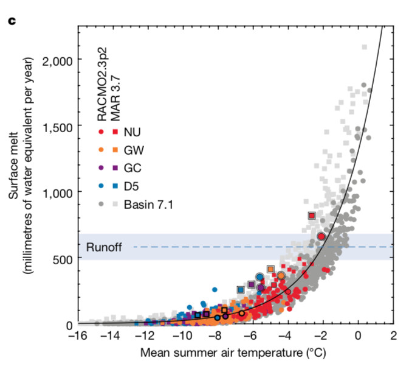
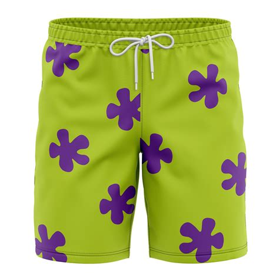

(or “How Should I Dress Today?”)
Last week, we saw how to determine whether 2 things appear to be related or not, using correlation.
But, just being aware that variables are correlated isn’t always that useful on its own.

“THIS JUST IN - CLOUDS ARE CORRELATED TO RAIN.”
In many cases, it would be very nice to know HOW MUCH one factor affects the other. Using a technique called regression, we can do just this.
What is Regression?
“Regression” is a catch-all term to describe how one (or more) variables impact something we care about. For example, we may work for the local government, and we want to know how much each additional streetlight reduces car accidents.
This can be done in many different ways, but we’ll start with the simplest form, Linear Regression.
Plotting a Linear Regression
Fortunately, a simple regression is pretty easy to understand visually.
Let’s draw a scatterplot of our two related factors (Streetlights and Accidents):

We see that these factors are somewhat, but not perfectly, related.
When we run a regression, we are simply dropping the straight line that best fits the data on top of the correlation plot:

Interpreting Our Regression
In this case, we see that more streetlights do appear to decrease accidents somewhat, with an average decrease of 0.302 accidents for every streetlight added per mile.
Note that our regression line did not pass through every observation - we cannot perfectly predict the number of car accidents using just streetlights.
This makes sense, since there are likely other factors that affect how dangerous a stretch of road is. Keep this idea in mind, as we’ll return to this!
Is It Linear?
The key assumption we’re making with a linear regression is that our relationship is, well, linear. And some things simply aren’t.
For example, here’s a clearly NOT LINEAR trend when ice melt is plotted against summer temperatures:

The caution here is to always choose your model wisely. Plot your data, understand the pattern, THEN pick your model. If you blindly decided to model this data with a linear regression, you’d end up with a horribly flawed estimate.
Regression in Daily Life
One practical lesson of regression that you can take away is:
In the right situation, linear trends are surprisingly useful.
To illustrate how powerful a “simple” linear regression can be, let’s use it to solve a real-world problem: deciding what clothes to wear.
Wait, What’s That in Fahrenheit?
Being an American, I am terrible at reading temperatures in Celsius. This can be an issue when I’m not in the U.S., and need to choose clothes for the weather:

It’s 29°C today - should I wear a winter coat…..or swim trunks?
It sure would be nice to be able to convert these temperatures to Fahrenheit, which I am much more familiar with.
Using Google would be easy ( “Convert °C to °F”), but what’s the fun in that? Instead, let’s use regression to discover the equation for converting temperatures!
Converting Units, Using Statistics
To do this, we’ll need 2 thermometers (1 reading in Celsius, the other Fahrenheit).
By placing both thermometers in the same spot and comparing their values at different times of day, we can use a linear regression to get a good estimate of how to convert from °C to °F.
Let’s take some temperature readings:
| # | Temp_Fahr | Temp_Cels |
|---|---|---|
| 1 | 89.8 | 32.1 |
| 2 | 84.0 | 28.9 |
| 3 | 64.6 | 18.1 |
| 4 | 91.0 | 32.8 |
| 5 | 90.5 | 32.5 |
| 6 | 77.9 | 25.5 |
Using just these 6 temperature readings, we can run a linear regression and arrive at the following equation:
 So, the estimate from our regression ends up being:
$$ 1.798* Celsius + 32.052$$
So, the estimate from our regression ends up being:
$$ 1.798* Celsius + 32.052$$
Which is pretty darn close to the actual conversion equation: $$ 1.8* Celsius + 32$$
Considering how few data points we had, our linear regression did an amazing job of capturing the true relationship. Take that, Google!
Using Our Result
Now that we have our equation, we can answer the original question - it’s going to be 29°C today, what do I wear?
$$ 1.798* 29°C + 32.052 = 84.14°F$$
Hang up that winter coat - it looks like we’re going to the pool today 🌴
Summing Up
Regression techniques provide an incredibly powerful approach for modeling and predicting behavior.
In the age of LLMs/AI/machine learning, it is tempting to just throw your data into the current “state-of-the-art” algorithm and move on. However, a simple linear regression can often provide useful results that are much easier to interpret than these more complex models.
But what about when your outcome is influenced by more than just 1 variable? For instance, it’d be very challenging to predict a house’s value by looking ONLY at square footage. More information is needed!
Next week, we’ll enhance our regression model. By adding additional inputs, we’ll be able to model out more complex relationships, using an approach called Multiple Regression. See you then!
===========================
R code used to generate plots:
- Linear Regression (Car Accidents)
library(data.table)
library(ggplot2)
set.seed(060124)
### Create mock accident data
Auto_Accidents <- rpois(1000,10) |> as.data.table()
colnames(Auto_Accidents) <- "Accidents"
Auto_Accidents[,Streetlights_per_Mile:= abs(20 - Accidents + rnorm(1000, 0, 5))]
### Run linear regression
conv_model <- lm(data = Auto_Accidents, formula = Accidents ~ Streetlights_per_Mile)
conv_formula <- paste0(paste0("y = ", round(conv_model$coefficients[2], 3)), "x + ", round(conv_model$coefficients[1],3))
### Scatterplot/Linear regression line
ggplot(Auto_Accidents, aes(x=Streetlights_per_Mile, y=Accidents)) +
geom_jitter() +
geom_smooth(method='lm', col = "red",se = FALSE, lwd = 3) +
ggtitle("Auto Accidents vs. Streetlights per Mile") +
theme(plot.title = element_text(size=15)) +
annotate("text", x = 22, y = 18, label = conv_formula, size = 7, col = "red") +
geom_text(aes(x = 26, y = 1, label = "Summer of Stats"), col="grey80", size = 3)
## `geom_smooth()` using formula = 'y ~ x'
- Linear Regression (Temp. Conversion)
library(data.table)
library(ggplot2)
set.seed(060124)
### Grab 6 temperature measurements
temp_readings <- round(rnorm(6, 79, 10), 1) |> as.data.table()
colnames(temp_readings) <- "Temp_Fahr"
temp_readings[,Temp_Cels := round(5/9*(Temp_Fahr-32), 1)]
conv_model <- lm(temp_readings$Temp_Fahr ~ temp_readings$Temp_Cels)
conv_formula <- paste0(paste0("y = ", round(conv_model$coefficients[2], 3)), "x + ", round(conv_model$coefficients[1],3))
### Create scatterplot
ggplot(temp_readings, aes(x=Temp_Cels, y=Temp_Fahr)) +
geom_point() +
stat_summary(fun.data= mean_cl_normal) +
geom_smooth(method='lm', col = "red") +
annotate("text", x = 22, y = 80, label = conv_formula, size = 7) +
geom_text(aes(x = 32, y = 64, label = "Summer of Stats"), col="grey80", size = 3)
## `geom_smooth()` using formula = 'y ~ x'